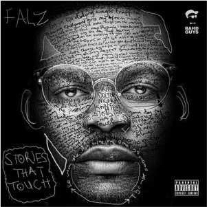
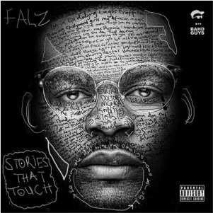

The J Guide

The J Guide is an illustrated, step-by-step guide for teaching friends how to roll a joint.
The J Guide is an illustrated, step-by-step guide for teaching friends how to roll a joint.
 


Lots of beautiful images, commentary on the evolution of graphic design and stories of the people who put a face to our music. In this multi-essay project, we explore album cover production in Nigeria.
Aunty Yuwa is worried that Osas, her niece, is gay. The birthday videos are much too raunchy and her Jezebel of a girlfriend looks awfully touchy. So, she makes a phone call. This Hanky Panky must come to an end.